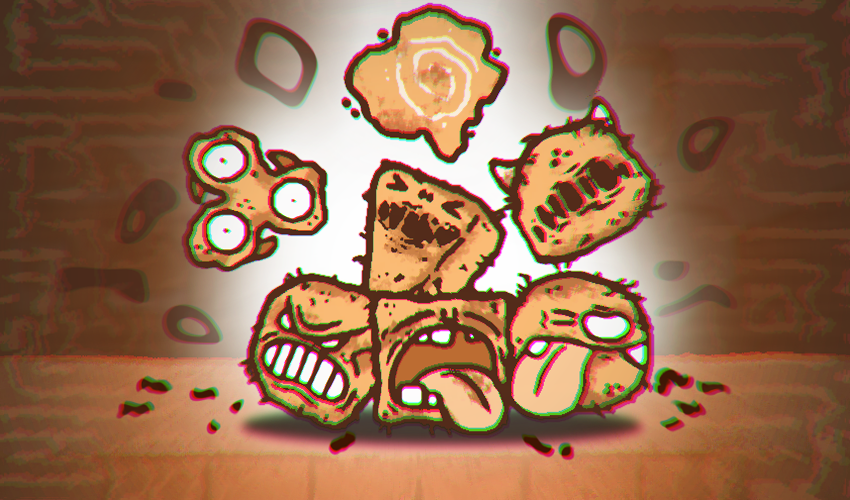

DANTE'S ILLNESS - 1.2 Release!
Dante's Illness » Devlog

New features:
-Post processing (Chromatic aberration, bloom, etc)
-Easier to understand what you need to do to end game
-New scene on good ending
-Grammar check-up / fixing
-Bigger resolution on game entry
-Fixed spanish translation error on scene change
Files
Dante's Illness.zip Play in browser
Jul 04, 2020
Dante's Illness - 1.2.zip 190 MB
Jul 04, 2020
Get Dante's Illness
Dante's Illness
Kill, conquer, reload!
| Status | Released |
| Author | Papeero |
| Genre | Shooter, Action |
| Tags | 2D, Creepy, Monsters, papeero, Point & Click, Short, Singleplayer, Unity |
| Languages | English, Spanish; Latin America |
Comments
Log in with itch.io to leave a comment.
Available for computer download and your browser!